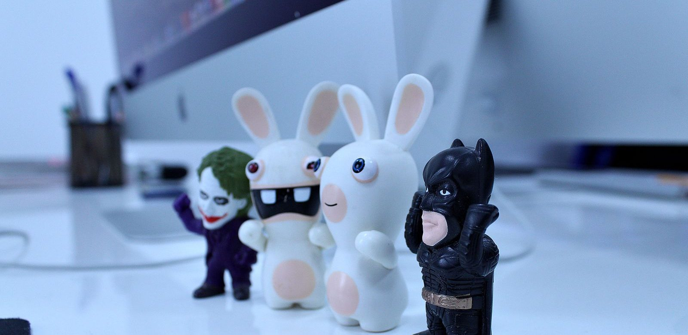

Het coolste Batman-speelgoed
Zes Batman-cadeaus die echt van elkaar verschillen, van een cape van een tientje tot de Batcave. Met per stuk voor wie het bedoeld is, wat eraan tegenvalt, en wat we juist niet zouden kopen.

In het kort
Zes Batman-cadeaus die echt van elkaar verschillen, van een cape van een tientje tot de Batcave. Klik op een naam om naar de uitleg te springen. De prijzen komen live van bol, dus wat je hier ziet is wat het nu kost.
Waar het verschil in zit
Zoek je op Batman, dan komt er van alles voorbij dat op het oog hetzelfde is. Vier dingen bepalen of een cadeau aankomt of na een week onder het bed ligt.
Wat voor soort speelgoed het is. Grofweg drie soorten: iets om zelf aan te trekken, een figuur om vast te houden, en iets om te bouwen. Die drie zijn niet uitwisselbaar. Een kind dat door de kamer wil rennen heeft niets aan een bouwset, en andersom.
Of er een tegenstander bij zit. Dit is bij Batman belangrijker dan bij welke held ook, want Batman is zijn schurken. Eén figuur in een doos is een figuur die staat; twee figuren zijn een spel. Let er dus op of The Joker, Two-Face of Robin meekomt.
De leeftijd op de doos. Die staat er niet voor niets. Bouwsets hebben kleine onderdelen, en de grote speelfiguren juist niet. Bij Batman zit er bovendien een tweede leeftijdsvraag onder: de films zijn donker en hebben een advies van 12 of hoger, terwijl het speelgoed vanaf een jaar of vier bedoeld is.
Of het blijft staan of weggaat. Een auto rijdt weg, de Batcave blijft. Speelsets met een vaste plek gaan langer mee, omdat het spel er steeds naar terugkeert.
Onze zes keuzes
Batman cape met masker
Veel kinderen willen Batman niet vasthouden maar zíjn. Dit is de goedkoopste manier om dat te doen, en met afstand het meest beoordeelde product op deze pagina. Hij gaat over gewone kleren heen, dus hij kan zo mee naar buiten en zo weer uit als het genoeg is geweest.
- Verreweg de meeste beoordelingen van alles op deze pagina
- De goedkoopste keuze hier
- Gaat over gewone kleren heen, dus hij kan zo mee naar buiten
- Stof, geen harnas: het oogt eenvoudiger dan een compleet verkleedpak
- Eén maat, dus voor een grote achtjarige kan hij kort uitvallen
Batman van 30 cm
Dit is het formaat waar kinderen echt mee spelen: groot genoeg om vast te houden, stevig genoeg om te vallen, en zonder kleine losse onderdelen. Armen, benen en hoofd draaien. Wij kiezen hem ondanks het ontbreken van beoordelingen, omdat de 30 cm-lijn van DC al jaren hetzelfde is en het formaat het werk doet.
- Groot en stevig, gemaakt om mee te spelen en niet om neer te zetten
- Geen kleine losse onderdelen die kwijtraken
- Middenprijs: goedkoper dan een bouwset, meer dan een cape
- Nog geen beoordelingen bij bol, dus je koopt hem op het formaat en niet op de ervaring van anderen
- Hij beweegt maar op een paar plekken, veel minder dan een verzamelfiguur
- In zijn eentje is hij snel uitgespeeld: zie de volgende keuze
Robin van 30 cm
Eén figuur is snel uitgespeeld. Er moet iemand tegenover staan, en Robin is daarvoor de logische keuze: hetzelfde formaat, dezelfde lijn, dus ze passen bij elkaar in de hand. Van alle 30 cm-figuren heeft deze de meeste beoordelingen.
- Ruim twintig beoordelingen, meer dan de meeste figuren in deze lijn
- Precies hetzelfde formaat als de Batman hierboven
- Maakt van één figuur meteen een spel
- Levertijd loopt op: reken op ruim een week
- Het is Robin, dus als je kind alleen Batman wil, sla hem over
LEGO Batmobile, kleine set
De goedkoopste manier om erachter te komen of je kind bouwen leuk vindt. Klein genoeg om in één middag af te krijgen, en er komt een auto uit die daarna gewoon speelgoed is. Dat laatste is precies het verschil met een verzamelset die op de kast belandt.
- Goedkoopste bouwset op deze pagina
- Af in één middag, dus geen half project op tafel
- De auto blijft daarna bruikbaar speelgoed
- Weinig beoordelingen, want de set is nieuw
- Klein, dus een geoefende bouwer van tien is er zo doorheen
LEGO Tumbler tegen Two-Face en The Joker
Deze set doet wat de losse figuren hierboven ook doen, maar dan in één doos: er zit niet alleen een voertuig in maar ook twee tegenstanders. Daardoor valt er meteen iets te spelen als het bouwen klaar is, en dat is bij bouwsets vaker het probleem dan de bouw zelf.
- Twee tegenstanders in dezelfde doos, dus meteen speelbaar
- Grote, herkenbare Tumbler
- Mooie middenweg tussen bouwen en spelen
- Duurder dan de kleine set, en dat merk je vooral bij de bouwtijd
- Vijf beoordelingen is weinig om iets uit af te leiden
LEGO Batcave met Batman, Batgirl en The Joker
Een auto rijdt weg, een plek blijft staan. De Batcave is waar het spel steeds naar terugkeert, en met drie figuren erbij is er ook meteen een verhaal. Dit is de duurste keuze op deze pagina, en dat is de reden: je koopt hier de plek en drie personages tegelijk.
- Drie figuren in één doos, waaronder Batgirl en The Joker
- Een vaste plek waar het spel naar terugkeert, in plaats van los speelgoed
- Blijft na het bouwen staan als speelset
- Duurste keuze hier
- Slechts twee beoordelingen, dus daar kun je weinig uit opmaken
- Neemt ruimte in en wil ergens blijven staan
Welk Batman-cadeau past bij welke leeftijd
3 tot 5 jaar. Verkleden, en verder niets. Op deze leeftijd is Batman vooral een cape en een stem. Bouwsets zijn nog te klein van onderdeel, en de films zijn helemaal niet aan de orde. De cape hierboven is hiervoor de enige keuze op deze pagina.
5 tot 8 jaar. De leeftijd van de grote figuur. Neem er een tweede bij, anders is het na drie dagen klaar: dat is de reden dat Robin hier tussen staat en niet als bijzaak. De kleine bouwset kan aan het eind van deze periode, als eerste kennismaking.
8 jaar en ouder. Nu wordt bouwen interessanter dan vasthouden. Kies dan een set waar tegenstanders bij zitten of een set die blijft staan, want alleen een voertuig is snel af en daarna klaar. Meer per leeftijd staat in superhelden cadeau per leeftijd.
Wat wij niet zouden kopen
Funko Pop-figuren als speelgoed. Ze staan tussen de actiefiguren, kosten ongeveer hetzelfde, en bewegen niet. Ze zijn om neer te zetten. Voor een verzamelaar prima, voor een kind dat wil spelen een teleurstelling op de ochtend zelf.
Verzamelfiguren van 18 cm met veel scharnieren. Ze zien er indrukwekkend uit en ze zijn ook indrukwekkend gemaakt, maar ze zijn bedoeld om te poseren en niet om mee te vallen. Bij spelen breken de handen en de losse accessoires raken kwijt.
Losse Batmobiles boven de honderd euro. Bij Batman staan er opvallend veel: modellen op schaal, displaydozen, sets met een vitrine. Die zijn voor volwassen verzamelaars gemaakt. Wil je iets duurs geven, kies dan liever een set met figuren erbij, want daar valt tenminste mee te spelen.
Sets waar Batman alleen in de titel staat. Zoek je op Batman, dan komen er dozen voorbij waar hij niet in zit maar wel in de productnaam. Lees dus altijd na wie er nou eigenlijk meekomt.
Hoe wij deze zes gekozen hebben
Met de hand uitgezocht, en niet automatisch opgehaald op wat het beste verkoopt. We hebben bewust gespreid over prijs (van ongeveer tien tot ongeveer zestig euro), over leeftijd (drie tot tien jaar) en over soort (verkleden, spelen, bouwen), zodat er voor elke situatie iets tussen staat. Wat hier stond is nagelopen op 25 augustus 2026.
Eerlijk erbij: speelgoed krijgt bij bol vaak maar een paar beoordelingen. Vijf sterren uit twee beoordelingen zegt niets, en daarom staat het aantal er altijd bij. Eén keuze op deze pagina heeft er nog geen enkele; dat zeggen we er dan bij, met de reden waarom we hem toch kiezen. Liever een product met 4,2 sterren uit drieëntwintig beoordelingen dan een 5 uit twee.
Via de knoppen naar bol verdienen wij een kleine commissie. Dat verandert niets aan wat hier staat: valt een product bij bol weg, dan verdwijnt het blok inclusief onze tekst, zodat er nooit een aanbeveling blijft staan bij iets wat er niet meer is.
💡 Wist je dat?
De Batmobile heeft in bijna elke film een ander uiterlijk. De versie uit 1989 is een lange zwarte raketauto, de Tumbler uit 2005 is bijna een tank, en de auto uit de film van 2022 is een opgevoerde straatauto. Bij het uitzoeken van een cadeau is dat handig om te weten: vraag welke film je kind gezien heeft.
Wil je eerst meer weten? Lees wie Batman is, bekijk zijn gadgets, of blader door alle gidsen.
Veelgestelde vragen
Wat is het beste Batman-speelgoed?
Dat hangt af van de leeftijd. Voor 3 tot 5 jaar is een cape met masker de beste keuze, voor 5 tot 8 jaar een grote speelfiguur van 30 cm met een tweede figuur ernaast, en vanaf 8 jaar een bouwset waar tegenstanders bij zitten. Wij hebben zes keuzes uitgezocht die over die leeftijden en over de prijzen gespreid liggen.
Vanaf welke leeftijd is Batman-speelgoed geschikt?
Het speelgoed begint rond 3 tot 4 jaar met verkleden, en bouwsets zijn meestal vanaf 6 of 8 jaar. Let op dat dit iets anders is dan de films: die hebben een advies van 12 jaar of hoger. Een kind kan dus prima met Batman spelen zonder de films te kennen.
Wat kost Batman-speelgoed?
Een cape begint rond de tien euro, een grote speelfiguur van 30 cm ligt rond de twintig euro, en bouwsets lopen van ongeveer vierentwintig euro voor een kleine set tot zestig euro voor de Batcave. Daarboven wordt het verzamelmateriaal voor volwassenen. De actuele prijzen staan in de blokken hierboven en komen rechtstreeks van bol.
Moet ik één figuur kopen of twee?
Twee. Dit is de fout die het vaakst gemaakt wordt: één figuur is een figuur die staat, twee figuren zijn een spel. Bij Batman geldt dat extra sterk, omdat zijn verhalen om zijn tegenstanders draaien. Robin, The Joker of Two-Face erbij maakt het verschil tussen drie dagen en drie maanden.
Is LEGO Batman geschikt voor een kind van zes?
De kleine sets wel, de grote niet. Een set die in één middag af is werkt op die leeftijd; een grote set wordt een project waar een volwassene bij moet blijven zitten. Kijk naar de leeftijd op de doos en naar het aantal onderdelen, niet naar hoe mooi de doos eruitziet.